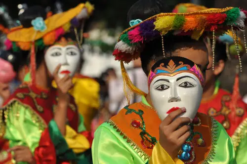

Kebudayaan Etnis Tionghoa (China) Benteng dan Suku Betawi

Perkenalan Singkat
Indonesia memiliki ragam suku dan budaya. Masing-masing suku dan budaya memiliki keunikan dan keindahannya sendiri. Terkadang, banyak orang menjelajahi kekayaan identitas manusia melalui pemahaman tentang keberagaman suku bangsa. Sebagai ilmu yang mempelajari manusia dan budayanya, antropologi mengajarkan bahwa perbedaan adat, bahasa, dan tradisi bukanlah sekat pemisah. Sebaliknya, perbedaan tersebut adalah bukti nyata dari kreativitas manusia dalam beradaptasi dengan lingkungannya. Setiap suku memiliki keunikan cara pandang, sistem sosial, dan warisan leluhur yang membentuk corak peradaban yang kaya. Untuk memahami bagaimana keberagaman ini tumbuh dan saling memengaruhi, secara khusus Peneliti akan memperlihatkan dua kelompok masyarakat yang hidup berdampingan di wilayah urban, yaitu Etnis Tionghoa (China) Benteng dan Suku Betawi. Peneliti akan melihat lebih dekat bagaimana perpaduan budaya (akulturasi) membentuk tradisi unik mereka. Pembahasan ini akan mencakup mulai dari kuliner khas, arsitektur bangunan, pakaian adat, hingga kesenian tradisional yang menjadi simbol identitas dan keharmonisan kedua komunitas ini.
Berikut adalah sebuah kelenteng yang terletak disekitar Tangerang.

Tujuan
Melalui eksplorasi ini, penelitian antropologi tersebut bertujuan untuk mengidentifikasi bentuk-bentuk kebudayaan khas dari kedua etnis, sekaligus menganalisis proses akulturasi dan interaksi sosial yang terjadi di antara mereka. Lebih dari sekadar inventarisasi budaya, kajian ini juga diarahkan untuk menjelaskan nilai-nilai keharmonisan dan toleransi yang tercipta, serta mendokumentasikan warisan tradisi lokal tersebut sebagai upaya pelestarian nyata di tengah arus modernisasi.

Di tengah pesatnya arus modernisasi, informasi mengenai kekayaan tradisi lokal seperti Etnis China Benteng dan Suku Betawi sering kali tersebar secara terpisah atau bahkan mulai terlupakan. Oleh karena itu, website ini hadir sebagai platform digital yang mengintegrasikan berbagai data, dokumentasi, dan hasil kajian antropologi kedua budaya tersebut ke dalam satu wadah yang interaktif. Adapun tujuan utama dari pembentukan website ini adalah untuk menyediakan ruang edukasi publik yang informatif mengenai akulturasi budaya China Benteng dan Betawi, sekaligus menjadi arsip digital yang mendokumentasikan kuliner, arsitektur, pakaian, dan kesenian mereka. Melalui platform ini, diharapkan kesadaran masyarakat akan pentingnya toleransi, keharmonisan, dan pelestarian warisan budaya dapat meningkat, sekaligus mempermudah para pelajar maupun peneliti dalam mengakses referensi kebudayaan yang valid dan menarik.